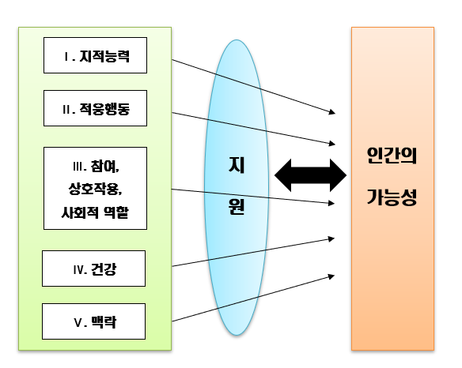

지적장애의 의의
지지적장애는 개인의 지능 및 적응 행동 기능이 평균보다 현저히 낮아 일상생활에서 여러 문제를 경험하는 상태를 말한다. 적장애는 생물학적, 환경적 요인으로 인해 개발 초기 또는 출생 이전에 발생하는 지능 및 적응 행동의 기능적 제한을 포함하는 발달 장애이다. 이러한 제한은 개인의 학습, 문제 해결, 판단, 일상생활 능력, 사회적 상호작용 및 독립 생활 기술에 영향을 미칠 수 있다. 지적장애를 단순히 IQ 점수로만 정의하지 않고, 실제로 그들의 삶에서 어떻게 기능하는지, 즉, 어떻게 학습하고, 일상생활에서 어떻게 대처하고, 사회적 상황에서 어떻게 상호작용하는지에 중점을 둔다.
지적장애의 정의
‘장애인 등에 대한 특수교육법’에서는 2016년 5월 개정을 토해 정신지체에서 지적장애(mental retardation)라는 용어를 사용하며, 국립특수교육원의 2002년 특수교육요구대상자 출현율 연구에서 지적장애를 정의하고 있으며, 2008년 2월을 기준으로 ‘지적장애’라는 용어로 변경되었다(이대식 외, 2018). 지적장애를 가장 적극적으로 정의하는 단체는 미국지적발달장애협회(American Association on Intellectual and Developmental Disabilities : AAIDD)는 발달기에 야기되고 적응행동에 결함을 갖는 일반적, 지적지능이 평균 이하인 자라고 하였다.
AAIDD에서 안내하는 지적장애 용어와 정의 및 개념체계는 장애인 복지법, 장애인 등에 대한 특수교육법, 발달장애인 권리보장 및 지원에 관한 법률 등을 부분적으로 반영하였고, 2013년 미국정신의학회에서 발간한 ‘정신장애의 진단 및 통계편람 5판(Diagnostic and Statistical Manual of Mental Disorders: DSM-5)에서도 지적 능력발달이 불충분하든지 불완전하다는 점을 정의하고 있다. AAIDD는 지적장애를 9차부터 인간 기능성의 다차원적 모델이 제안된 후 10차 정의, 11차 정의, 12차 정의에 이르면서 조금씩 수정·보완되어 갔다. 즉, 인간 기능성의 다차원적 모델은 지적장애 '인간 기능성의 제한성'으로 정의하고, 생태학적이며 다면적인 관점에서 장애 개념화하며, 개인의 기능을 향상시키기 위한 개별화 된 지원의 역할을 강조하였다.

지적장애 진단
미국정신의학회가 제시한 지적장애(지적발달장애)를 미국 정신질환 진단 및 통계 편람 DSM-5(2013)판에 따르면, 개념적, 사회적, 실행적 영역에서 지적 기능과 적응 기능 모두에 결함을 의미한다. 발달적 시기에 출현하는 장애이다.
지적장애로 진단하기 위해서는 다음의 세 가지 기준이 반드시 충족되어야 한다.
(1) 임상적 평가와 표준화된 개인 지능 검사에 의해 추론, 문제 해결, 계획, 추상적 사고, 판단, 학교의 학습, 경험을 통한 학습과 같은 지적기능의 결함 확인
(2) 개인적 독립성과 사회적 책임감에 관한 발달적 표준과 사회문화적 표준에 충족되지 못하는 결과를 야기하는 적응 기능에서의 결함. 지속적인 지원이 없다면, 적응 결함에 의해 가정, 학교, 공동체와 같은 복합적인 환경 속에서 의사소통, 사회적 참여와 같은 일상적 활동에서 하나 또는 그 이상의 기능 제한
(3) 발달적 시기에 지적결함과 적응결함 시작
이와 같은 구성 요소는 개인의 수행능력에 영향을 미치는 5가지 요소(지능, 적응행동, 참여・상호작용・사회적 역할, 건강, 환경)과 개인 수행능력을 매개하고 있다. 즉, 지적장애학생의 수행능력은 5가지 차원과 개별화된 지원의 역동적인 상호작용에 따라 달라질 수 있다는 것을 보여준다.
나가면서
결론적으로, 지적장애는 사회의 다양성을 존중하고 모든 사람의 권리와 존엄성을 지키는 것 중요하다. 인간의 다양성의 일부: 지적장애의 독특한 능력과 잠재력을 가지며, 사회에 기여할 수 있다. 지적장애의 존재는 인간의 다양성을 인정하고 존중하는 것이 중요하다.평등한 기회의 중요성: 지적장애도 교육, 직업, 사회 활동 등에서 평등한 기본적인 인권 문제와 직결되어 있다.사회의 포괄성과 통합: 지적장애의 적절한 지원과 교육은 사회 전체의 포괄성과 통합하여 서로를 존중하는 사회를 만드는 데 기여한다. 지적장애를 가진 경우 적절한 지원과 기회를 제공하는 것은 단순히 지능이나 능력에 기반하지 않으며, 함께 성장하고 발전하는 사회를 만들기 위해서 필수적이다.
참고문헌
강대욱, 강병일, 김기주, 김남진, 김창평(2016). 특수교육학개론. 학지사.
김이영, 김지영, 김태강, 김현정, 성연승, 정순주, 정종화(2020). 특수교육학개론. 양성원.
이대식, 김수연, 이은주, 허승준(2018). 통합교육의 이해와 실제, 학지사.
정동영, 김득영, 김종인, 김주영(2000), 특수교육비전 2020. 국립특수교육원.
2023.04.16 - [특수장애] - 지적장애 - 문제해결 능력과 사회적 기술, 학습문제 발생
지적장애 - 문제해결 능력과 사회적 기술, 학습문제 발생
1. 지적장애의 특징 및 증상 지적장애(intellectual disability)는 지적기능(intellectual skill)과 적응행동(adaptive behavior)이 심각히 손상되어 있는 발달장애로 지적기능과 적응 행동의 결함 때문에 일상생
think-sis.co.kr